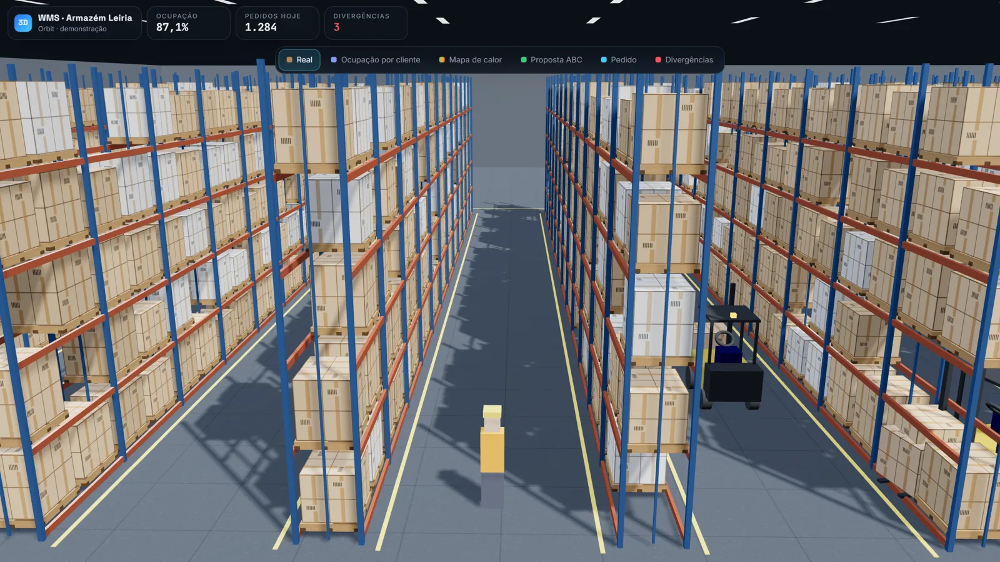

TMS para transportadoras
O TMS completo para a tua transportadora, tudo integrado.
Planeador, cargas e e-CMR, app do motorista, oficina e bolsa de cargas numa só plataforma.
Ligada à tua faturação e ao teu GPS, com o agente de IA Orbit.
Movido a IA
Tu decides, o Orbit executa.
Um agente que aprende com cada carga, viagem e cliente — e age em tempo real, para a tua equipa decidir só o que importa.
O teu núcleo de IA
A tua operação na palma da mão.
AprendeRaciocinaAge
Cada carga, documento e decisão vira contexto — o Orbit entende a tua operação como a tua equipa entende.
Pesa cada sinal contra os teus objetivos, compara as opções e mostra o porquê antes de mexer em nada.
Leva cada decisão até ao fim em tempo real, nas ferramentas que já usas, e aprende com cada resultado.
O que faz a FleetFlow
Tudo o que a tua operação precisa, numa só plataforma.
Feita dentro de uma empresa de transportes, para quem gere camiões, motoristas e cargas todos os dias.
Planeador
Planeia o dia ou a semana numa só vista. As cargas ficam ordenadas de norte a sul e separadas em Nacional, Ibérico e Internacional.
Cargas e e-CMR
Cada carga com cliente, locais, horas e camião. O CMR digital sai dos dados da carga — não se escreve nada duas vezes.
App do motorista e do gestor
O motorista vê o trabalho do dia no telemóvel, Android ou iPhone, sem equipamento extra. O gestor acompanha tudo e fala com a equipa.
Bolsa de cargas e rede
Passa a empresas parceiras as cargas que não consegues fazer e recebe as delas. Uma rede entre transportadores, na mesma plataforma.
Oficina e stock
Trabalhos por viatura, revisões, pneus e quilómetros com avisos, e as peças em stock sempre contadas.
Orbit, o agente
Propõe o plano, responde a perguntas sobre a operação e prepara o trabalho. Tu aprovas antes de ele agir.
Faturação ligada
As cargas feitas viram um rascunho de fatura no programa que a empresa já usa. Uma pessoa confirma — nada é emitido sozinho.
Preços públicos
Desde 150 €/mês + IVA, mensal ou anual. Crias a conta online em minutos e escolhes o plano pelo tamanho da frota.
Novidades
- Planeamento por lugares
- Viagens com o reboque desenhado
- Guias digitais com QR e versão
- Parque com leitura do número de quadro
- Inspeção com fotos e assinatura
- Faturação mensal por cliente
- Gestão inteligente de emails
- Gestão documental
- Automação financeira
- Gestão de equipas
- Relatórios inteligentes
- Inteligência empresarial
Transporte de veículos: cada carro no seu lugar.
- Cliente A · 3 carros
- Cliente B · 2 carros
- Cliente C · 2 carros
- Cliente D · 1 carro
- Entregue
Camião: 2 lugares — sobre a cabine e no estrado · reboque: 3 em cima e 3 em baixo. Dados de exemplo.
Como funciona
Configura os camiões
Diz quantos lugares tem cada camião e em que piso. O Orbit pode preparar a configuração; tu confirmas.
Recebe os carros
As encomendas dos clientes entram com os carros a transportar. Os que já estão no parque são lidos pelo número de quadro.
Planeia a viagem
Escolhes o lugar de cada carro no desenho do camião. A guia de transporte sai da viagem e chega à app do motorista.
Entrega e fatura
Inspeção com fotos e assinatura na recolha e na entrega. No fim do mês, a faturação de cada cliente segue para o teu programa.
A inteligência artificial que trabalha com a sua empresa.
Uma empresa. Um sistema. Uma inteligência.
O Orbit Business adapta-se à sua organização, aos seus processos e às ferramentas que já utiliza.
Infraestrutura dedicada logicamente à sua empresa, permissões personalizadas, supervisão humana e proteção dos dados empresariais.
Menos trabalho repetitivo. Mais tempo para fazer crescer o seu negócio.
Novo · Software para armazéns
O seu armazém, palete a palete, em 3D.
Cada posição com o seu código — fila, andar e palete (A-0-1 no chão, A-1-1 por cima). Vê-se num relance o que está onde, o que está livre e o que tem de sair. Para armazéns, fábricas e operadores logísticos.

Posições em 3D
Estantes, andares e paletes desenhados como estão no armazém. Toca numa palete e vês produto, lote, quantidade e validade.
Leitor com pistola ou telemóvel
Lê a etiqueta logística que a palete já traz e a etiqueta da posição. Entrada, saída e mudança de sítio sem papel; a palete errada é recusada.
Stock de Excel, PDF ou Word
Importa o stock que já tem — ou mete-o à mão. O sistema encontra as colunas sozinho e mostra o que encontrou antes de gravar.
Inventário para auditoria
Semanal, mensal ou anual: o stock por produto, a contagem feita no armazém e as diferenças, com o histórico de cada contagem.
Etiquetas das posições
Gera as etiquetas QR de cada posição e das paletes que chegam sem etiqueta — em folhas A4 de autocolantes ou na impressora de etiquetas.
Liga à sua faturação
Armazenagem por palete e por dia, entradas e saídas seguem para o programa de faturação certificado que já usa. Uma pessoa confirma antes de emitir.
Ligações
Liga-se ao que já usas.
A FleetFlow fala com o GPS e os programas que a tua empresa já tem. Os estados são reais: “Em validação” quer dizer que ainda está a ser testado.
GPS e telemática
Ou só o GPS do telemóvel, pela app do motorista — sem instalar nada no camião.
- Cartrack Disponível
- Frotcom Em validação
- Webfleet Em validação
- Geotab Em validação
- Verizon Connect Em validação
- Samsara Em validação
- Visirun Em validação
Faturação
Envia rascunhos; uma pessoa confirma antes de emitir.
- InvoiceXpress Em validação
- Moloni Em validação
- PHC GO Em validação
Pagamentos
Pagamento seguro das subscrições.
- Stripe Disponível
Os nomes pertencem aos respetivos donos; não implica parceria.
Não encontras o teu programa? Fala connoscoTambém fazemos
Além do TMS, software e sites à medida.
A equipa que faz a FleetFlow também faz software de oficina, sites topo de gama e programas feitos para o teu negócio — e liga-os aos programas que já usas.
Software de oficina
Gestão da oficina e do stock: trabalhos por viatura, marcações, revisões e pneus com avisos, peças sempre contadas e a app da oficina para os mecânicos. Também existe só para oficinas.
Pedir propostaSites topo de gama com movimento
Sites animados e em 3D, como este: rápidos, em várias línguas e feitos à medida da tua marca.
Pedir orçamentoSoftware por medida
Ferramentas internas, portais para clientes e agentes de IA que trabalham na tua operação, feitos para o teu negócio.
Pedir orçamentoIntegrações
Ligamos a FleetFlow à faturação (InvoiceXpress, Moloni e PHC GO, em validação) e ao GPS (Cartrack disponível; outros em validação). Usas outro programa? Diz-nos qual.
Falar de integrações
O que fazemos
Avatares, sites e software para pessoas e empresas.
- 1 / 21
- 2 / 21
- 3 / 21
- 4 / 21
- 5 / 21
- 6 / 21
- 7 / 21
- 8 / 21
- 9 / 21
- 10 / 21
- 11 / 21
- 12 / 21
- 13 / 21
- 14 / 21
- 15 / 21
- 16 / 21
- 17 / 21
- 18 / 21
- 19 / 21
- 20 / 21
- 21 / 21
Avatares que falam pela tua empresa, sites que se mexem e software com agentes de IA — feitos à medida.
Pedir orçamento